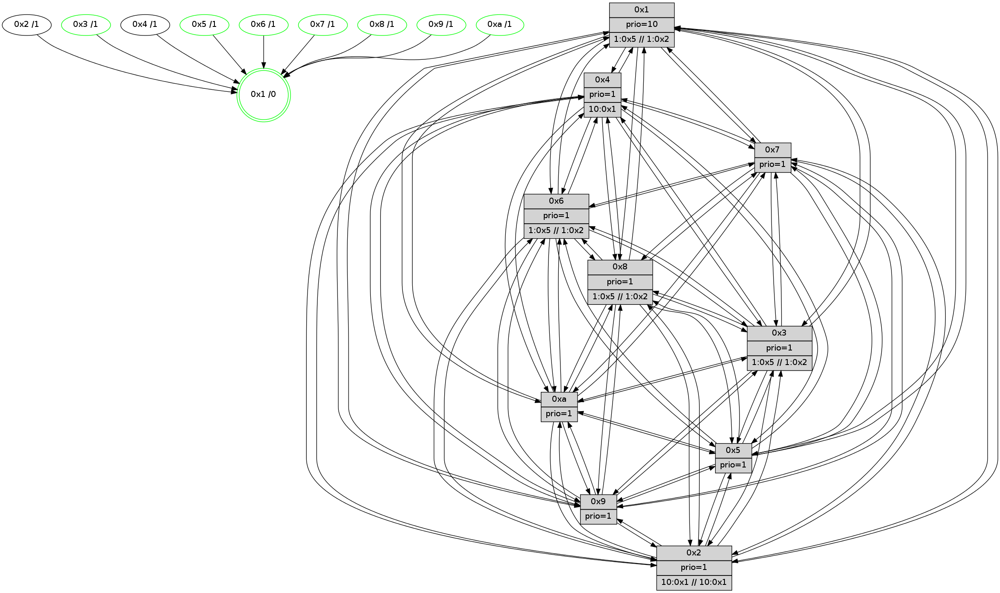

>> << IDX [start] -100 -25 -5 +0 +5 +25 +100 [550.54400897]
 Previous packets
----------------------------------------------------------------------
545.027097 beacon01(faad) #0 coord=01,02,03,04,05,06,07,0a,09,08 cycle=688.0ms assoc
-- color-indic=1 64 57 c9
545.037081 beacon02(faad) #0 coord=01,02,03,04,05,06,07,0a,09,08 cycle=688.0ms assoc 64 c4 f8
545.047078 beacon03(faad) #0 coord=01,02,03,04,05,06,07,0a,09,08 cycle=688.0ms assoc 64 be b5
545.057081 beacon04(faad) #0 coord=01,02,03,04,05,06,07,0a,09,08 cycle=688.0ms assoc 64 c9 5f
545.067079 beacon05(faad) #0 coord=01,02,03,04,05,06,07,0a,09,08 cycle=688.0ms assoc 64 b3 12
545.077080 beacon06(faad) #0 coord=01,02,03,04,05,06,07,0a,09,08 cycle=688.0ms assoc 64 3d c5
545.087080 beacon07(faad) #0 coord=01,02,03,04,05,06,07,0a,09,08 cycle=688.0ms assoc 64 47 88
545.097085 beacon0a(faad) #0 coord=01,02,03,04,05,06,07,0a,09,08 cycle=688.0ms assoc 64 36 83
545.107084 beacon09(faad) #0 coord=01,02,03,04,05,06,07,0a,09,08 cycle=688.0ms assoc 64 b8 54
545.117087 beacon08(faad) #0 coord=01,02,03,04,05,06,07,0a,09,08 cycle=688.0ms assoc 64 c2 19
545.128943 [Hello(3): seq=351 sym=1,7,6,2,4,8,9,10,5 sysInfo=coloring-mode-on,ColoringModeIndicationCalled stat=1:3,5,14,0/7:0,15,8,3/6:5,2,7,4/2:8,6,9,5/4:11,8,8,3/8:7,6,3,0/9:14,6,11,5/10:10,5,4,2/5:12,5,8,5]
545.133016 [Hello(2): seq=348 sym=4,5,7,6,3,9,8,10,1 sysInfo=hasWarning stat=4:6,7,7,1/5:10,6,6,4/7:11,2,9,3/6:0,10,9,3/3:2,4,0,0/9:13,4,4,1/8:3,11,1,0/10:11,10,4,2/1:5,0,14,0]
545.135906 [Hello(10): seq=283 sym=6,2,8,9,5,7,4,1 sysInfo= stat=6:2,8,8,3/2:0,0,0,0/8:3,3,7,2/9:13,7,6,3/5:7,5,6,5/7:14,1,7,2/4:3,9,5,5/1:13,1,15,0]
545.139777 [Hello(9): seq=294 sym=5,2,3,4,7,6,8,10,1 sysInfo=hasWarning stat=5:8,5,5,6/2:4,8,9,3/3:10,7,4,3/4:11,7,6,4/7:2,15,10,2/6:10,5,8,3/8:8,4,5,1/10:7,8,7,4/1:1,1,15,0]
545.142787 [Hello(8): seq=294 sym=5,2,3,4,7,6,9,10,1 sysInfo=coloring-mode-on,ColoringModeIndicationCalled stat=5:10,5,7,5/2:3,7,9,4/3:1,15,6,5/4:7,8,9,4/7:12,12,10,4/6:0,8,10,4/9:11,6,8,4/10:7,7,6,4/1:0,4,15,0]
545.148214 [STC(1) #0.23 tree-change,inconsistent-stability,stable,to-color d=0]
545.150758 [Hello(5): seq=351 sym=7,6,4,3,1,9,8,10,2 sysInfo= stat=7:14,0,10,3/6:1,10,10,3/4:4,9,7,3/3:3,14,1,0/1:8,0,14,0/9:3,7,8,3/8:4,12,3,1/10:2,12,7,3/2:5,7,7,3]
545.154757 [Color(1) seq=31 @0:0 prio=10 >1.@5,1.@6,1.@7,1.@8 >>1.@2,1.@3,1.@4]
----------------------------------------------------------------------
545.815226 beacon01(faad) #0 coord=01,02,03,04,05,06,07,0a,09,08 cycle=688.0ms assoc
-- color-indic=1 64 93 c7
545.825209 beacon02(faad) #0 coord=01,02,03,04,05,06,07,0a,09,08 cycle=688.0ms assoc 64 00 f6
545.835210 beacon03(faad) #0 coord=01,02,03,04,05,06,07,0a,09,08 cycle=688.0ms assoc 64 7a bb
545.845211 beacon04(faad) #0 coord=01,02,03,04,05,06,07,0a,09,08 cycle=688.0ms assoc 64 0d 51
545.855211 beacon05(faad) #0 coord=01,02,03,04,05,06,07,0a,09,08 cycle=688.0ms assoc 64 77 1c
545.865209 beacon06(faad) #0 coord=01,02,03,04,05,06,07,0a,09,08 cycle=688.0ms assoc 64 f9 cb
545.875209 beacon07(faad) #0 coord=01,02,03,04,05,06,07,0a,09,08 cycle=688.0ms assoc 64 83 86
545.885214 beacon0a(faad) #0 coord=01,02,03,04,05,06,07,0a,09,08 cycle=688.0ms assoc 64 f2 8d
545.895215 beacon09(faad) #0 coord=01,02,03,04,05,06,07,0a,09,08 cycle=688.0ms assoc 64 7c 5a
545.905215 beacon08(faad) #0 coord=01,02,03,04,05,06,07,0a,09,08 cycle=688.0ms assoc 64 06 17
545.916156 [STC(4)->1 #0.23 tree-change,inconsistent-stability,to-color d=1]
545.917732 [STC(2)->1 #0.23 tree-change,inconsistent-stability,to-color d=1]
545.922714 [STC(10)->1 #0.23 tree-change,inconsistent-stability,stable,to-color d=1]
545.924680 [Color(10) seq=20 @0:0 prio=1]
545.927083 [STC(8)->1 #0.23 tree-change,inconsistent-stability,stable,to-color d=1]
545.929023 [TreeStatus(8)-.->1 #0.23 tree-change,inconsistent-stability,stable child=1]
545.930240 [Hello(7): seq=351 sym=2,3,5,6,4,8,9,10,1 sysInfo= stat=2:2,2,11,7/3:11,11,9,5/5:13,4,10,8/6:6,12,2,2/4:6,3,10,4/8:12,14,10,2/9:10,3,10,7/10:14,4,11,4/1:15,10,14,0]
545.932752 [Color(8) seq=31 @0:0 prio=1 >1.@5,1.@6,1.@7,1.@9 >>1.@2,1.@3,1.@4]
545.936734 [STC(7)->1 #0.23 tree-change,inconsistent-stability,stable,to-color d=1]
545.938475 [Hello(6): seq=351 sym=2,3,5,4,7,9,8,10,1 sysInfo=coloring-mode-on,ColoringModeIndicationCalled stat=2:15,5,11,4/3:1,13,8,3/5:3,6,9,7/4:1,6,8,4/7:6,13,9,2/9:0,7,10,6/8:14,7,9,3/10:0,5,12,4/1:0,12,13,0]
545.942682 [Color(7) seq=19 @0:0 prio=1]
545.944615 [STC(6)->1 #0.23 tree-change,inconsistent-stability,stable,to-color d=1]
545.945898 [TreeStatus(3)-.->1 #0.23 tree-change,inconsistent-stability,stable child=1]
545.947405 [Color(3) seq=31 @0:0 prio=1 >1.@5,1.@6,1.@7,1.@8 >>1.@2,1.@3,1.@4]
545.949458 [Color(6) seq=31 @0:0 prio=1 >1.@5,1.@7,1.@8,1.@9 >>1.@2,1.@3,1.@4]
545.951706 [STC(9)->1 #0.23 tree-change,inconsistent-stability,stable,to-color d=1]
545.953367 [Color(9) seq=15 @0:0 prio=1]
----------------------------------------------------------------------
546.603357 beacon01(faad) #0 coord=01,02,03,04,05,06,07,0a,09,08 cycle=688.0ms assoc
-- color-indic=1 64 2f c2
546.613339 beacon02(faad) #0 coord=01,02,03,04,05,06,07,0a,09,08 cycle=688.0ms assoc 64 bc f3
546.623339 beacon03(faad) #0 coord=01,02,03,04,05,06,07,0a,09,08 cycle=688.0ms assoc 64 c6 be
546.633340 beacon04(faad) #0 coord=01,02,03,04,05,06,07,0a,09,08 cycle=688.0ms assoc 64 b1 54
546.643340 beacon05(faad) #0 coord=01,02,03,04,05,06,07,0a,09,08 cycle=688.0ms assoc 64 cb 19
546.653341 beacon06(faad) #0 coord=01,02,03,04,05,06,07,0a,09,08 cycle=688.0ms assoc 64 45 ce
546.663339 beacon07(faad) #0 coord=01,02,03,04,05,06,07,0a,09,08 cycle=688.0ms assoc 64 3f 83
546.673343 beacon0a(faad) #0 coord=01,02,03,04,05,06,07,0a,09,08 cycle=688.0ms assoc 64 4e 88
546.683344 beacon09(faad) #0 coord=01,02,03,04,05,06,07,0a,09,08 cycle=688.0ms assoc 64 c0 5f
546.693347 beacon08(faad) #0 coord=01,02,03,04,05,06,07,0a,09,08 cycle=688.0ms assoc 64 ba 12
546.704510 [Hello(2): seq=349 sym=4,5,7,6,3,9,8,10,1 sysInfo=hasWarning stat=4:6,7,7,1/5:11,6,6,4/7:12,3,10,3/6:1,11,10,3/3:2,5,1,1/9:14,5,5,1/8:4,12,2,1/10:12,11,5,2/1:5,1,15,0]
546.707905 [Hello(9): seq=295 sym=5,2,3,4,7,6,8,10,1 sysInfo=hasWarning stat=5:9,5,5,6/2:4,8,10,3/3:10,7,4,3/4:11,7,7,4/7:2,15,10,2/6:10,5,8,3/8:9,4,5,1/10:7,8,7,4/1:1,2,0,0]
546.711240 [Hello(8): seq=295 sym=5,2,3,4,7,6,9,10,1 sysInfo=coloring-mode-on,ColoringModeIndicationCalled stat=5:11,5,7,5/2:3,7,10,4/3:1,0,6,6/4:7,8,10,4/7:12,13,11,4/6:1,9,11,4/9:11,7,9,4/10:7,7,6,4/1:0,5,0,0]
546.715012 [Hello(4): seq=352 sym=5,7,6,2,3,9,8,10,1 sysInfo= stat=5:15,7,7,6/7:15,1,10,2/6:5,10,10,4/2:10,8,8,4/3:0,6,0,1/9:14,6,6,3/8:10,4,11,4/10:12,11,9,3/1:6,4,2,0]
546.717625 [Hello(5): seq=352 sym=7,6,4,3,1,9,8,10,2 sysInfo= stat=7:15,1,11,3/6:2,11,11,3/4:4,9,8,3/3:3,15,1,1/1:8,1,14,0/9:3,8,9,3/8:4,13,4,2/10:2,13,8,3/2:5,7,8,3]
546.725439 [Hello(3): seq=352 sym=1,7,6,2,4,8,9,10,5 sysInfo=coloring-mode-on,ColoringModeIndicationCalled stat=1:4,6,15,0/7:0,15,8,3/6:5,3,7,4/2:9,6,9,5/4:11,8,9,3/8:8,6,3,0/9:15,7,12,5/10:11,5,5,2/5:13,5,8,5]
546.732279 [Hello(10): seq=284 sym=6,2,8,9,5,7,4,1 sysInfo= stat=6:3,9,9,3/2:0,0,0,0/8:4,4,8,3/9:14,8,7,3/5:8,5,6,5/7:15,2,8,2/4:3,9,6,5/1:14,2,0,0]
----------------------------------------------------------------------
547.391487 beacon01(faad) #0 coord=01,02,03,04,05,06,07,0a,09,08 cycle=688.0ms assoc
-- color-indic=1 64 fb f7
547.401469 beacon02(faad) #0 coord=01,02,03,04,05,06,07,0a,09,08 cycle=688.0ms assoc 64 68 c6
547.411470 beacon03(faad) #0 coord=01,02,03,04,05,06,07,0a,09,08 cycle=688.0ms assoc 64 12 8b
547.421470 beacon04(faad) #0 coord=01,02,03,04,05,06,07,0a,09,08 cycle=688.0ms assoc 64 65 61
547.431472 beacon05(faad) #0 coord=01,02,03,04,05,06,07,0a,09,08 cycle=688.0ms assoc 64 1f 2c
547.441469 beacon06(faad) #0 coord=01,02,03,04,05,06,07,0a,09,08 cycle=688.0ms assoc 64 91 fb
547.451471 beacon07(faad) #0 coord=01,02,03,04,05,06,07,0a,09,08 cycle=688.0ms assoc 64 eb b6
547.461474 beacon0a(faad) #0 coord=01,02,03,04,05,06,07,0a,09,08 cycle=688.0ms assoc 64 9a bd
547.471477 beacon09(faad) #0 coord=01,02,03,04,05,06,07,0a,09,08 cycle=688.0ms assoc 64 14 6a
547.481477 beacon08(faad) #0 coord=01,02,03,04,05,06,07,0a,09,08 cycle=688.0ms assoc 64 6e 27
547.494643 [Hello(1): seq=261 sym=4,2,9,5,10,3,8,6,7 sysInfo=coloring-mode-on,ColoringModeRequestCalled stat=4:14,11,11,5/2:14,9,12,6/9:8,11,14,6/5:8,11,10,7/10:0,2,12,4/3:15,8,13,7/8:14,7,15,4/6:2,11,13,3/7:13,2,15,6]
547.497376 [Hello(7): seq=352 sym=2,3,5,6,4,8,9,10,1 sysInfo= stat=2:3,2,12,7/3:12,12,9,6/5:14,4,10,8/6:6,13,3,2/4:6,3,11,4/8:13,14,10,2/9:11,4,11,7/10:15,4,11,4/1:15,11,14,0]
547.500057 [Color(3) seq=32 @0:0 prio=1 >1.@5,1.@6,1.@7,1.@8 >>1.@2,1.@3,1.@4]
547.503395 [Hello(6): seq=352 sym=2,3,5,4,7,9,8,10,1 sysInfo=coloring-mode-on,ColoringModeIndicationCalled stat=2:0,5,12,4/3:2,13,8,4/5:4,6,9,7/4:1,6,9,4/7:6,13,9,2/9:1,8,11,6/8:15,7,9,3/10:1,5,12,4/1:0,13,13,0]
547.506424 [Color(7) seq=20 @0:0 prio=1]
547.507808 [Color(6) seq=32 @0:0 prio=1 >1.@5,1.@7,1.@8,1.@9 >>1.@2,1.@3,1.@4]
547.511067 [Color(9) seq=16 @0:0 prio=1]
547.512296 [Color(10) seq=21 @0:0 prio=1]
547.515063 [Color(5) seq=16 @0:0 prio=1]
----------------------------------------------------------------------
548.179618 beacon01(faad) #0 coord=01,02,03,04,05,06,07,0a,09,08 cycle=688.0ms assoc
-- color-indic=1 64 47 f2
548.189600 beacon02(faad) #0 coord=01,02,03,04,05,06,07,0a,09,08 cycle=688.0ms assoc 64 d4 c3
548.199600 beacon03(faad) #0 coord=01,02,03,04,05,06,07,0a,09,08 cycle=688.0ms assoc 64 ae 8e
548.209601 beacon04(faad) #0 coord=01,02,03,04,05,06,07,0a,09,08 cycle=688.0ms assoc 64 d9 64
548.219602 beacon05(faad) #0 coord=01,02,03,04,05,06,07,0a,09,08 cycle=688.0ms assoc 64 a3 29
548.229601 beacon06(faad) #0 coord=01,02,03,04,05,06,07,0a,09,08 cycle=688.0ms assoc 64 2d fe
548.239601 beacon07(faad) #0 coord=01,02,03,04,05,06,07,0a,09,08 cycle=688.0ms assoc 64 57 b3
548.249607 beacon0a(faad) #0 coord=01,02,03,04,05,06,07,0a,09,08 cycle=688.0ms assoc 64 26 b8
548.259606 beacon09(faad) #0 coord=01,02,03,04,05,06,07,0a,09,08 cycle=688.0ms assoc 64 a8 6f
548.269606 beacon08(faad) #0 coord=01,02,03,04,05,06,07,0a,09,08 cycle=688.0ms assoc 64 d2 22
548.280820 [Hello(10): seq=285 sym=6,2,8,9,5,7,4,1 sysInfo= stat=6:3,9,9,3/2:0,0,0,0/8:4,4,8,3/9:14,8,7,3/5:8,6,6,5/7:15,2,8,2/4:3,9,6,5/1:15,2,0,0]
548.283203 [Hello(9): seq=296 sym=5,2,3,4,7,6,8,10,1 sysInfo=hasWarning stat=5:10,6,5,6/2:4,8,10,3/3:11,7,4,3/4:12,7,7,4/7:2,15,10,2/6:10,5,8,3/8:10,4,5,1/10:8,9,7,4/1:2,2,0,0]
548.286558 [Color(1) seq=33 @0:0 prio=10 >1.@5,1.@6,1.@7,1.@8 >>1.@2,1.@3,1.@4]
548.290052 [Hello(5): seq=353 sym=7,6,4,3,1,9,8,10,2 sysInfo= stat=7:15,1,11,3/6:2,11,11,3/4:4,9,8,3/3:4,15,1,1/1:9,1,14,0/9:3,8,9,3/8:4,13,4,2/10:3,13,8,3/2:5,7,8,3]
548.293849 [Hello(2): seq=350 sym=4,5,7,6,3,9,8,10,1 sysInfo=hasWarning stat=4:7,7,7,1/5:12,7,6,4/7:13,4,10,3/6:2,12,10,3/3:3,6,1,1/9:15,6,5,1/8:5,12,2,1/10:13,12,5,2/1:6,1,15,0]
548.300097 [Hello(3): seq=353 sym=1,7,6,2,4,8,9,10,5 sysInfo=coloring-mode-on,ColoringModeIndicationCalled stat=1:5,6,15,0/7:0,0,8,3/6:6,4,7,4/2:9,6,9,5/4:11,8,9,3/8:8,6,3,0/9:15,8,12,5/10:12,6,5,2/5:13,6,8,5]
548.304212 [Hello(4): seq=353 sym=5,7,6,2,3,9,8,10,1 sysInfo= stat=5:0,8,7,6/7:15,2,10,2/6:6,11,10,4/2:10,8,8,4/3:1,7,0,1/9:14,7,6,3/8:10,4,11,4/10:13,12,9,3/1:7,4,2,0]
----------------------------------------------------------------------
548.967749 beacon01(faad) #0 coord=01,02,03,04,05,06,07,0a,09,08 cycle=688.0ms assoc
-- color-indic=1 64 83 fc
548.977731 beacon02(faad) #0 coord=01,02,03,04,05,06,07,0a,09,08 cycle=688.0ms assoc 64 10 cd
548.987732 beacon03(faad) #0 coord=01,02,03,04,05,06,07,0a,09,08 cycle=688.0ms assoc 64 6a 80
548.997732 beacon04(faad) #0 coord=01,02,03,04,05,06,07,0a,09,08 cycle=688.0ms assoc 64 1d 6a
549.007733 beacon05(faad) #0 coord=01,02,03,04,05,06,07,0a,09,08 cycle=688.0ms assoc 64 67 27
549.017732 beacon06(faad) #0 coord=01,02,03,04,05,06,07,0a,09,08 cycle=688.0ms assoc 64 e9 f0
549.027734 beacon07(faad) #0 coord=01,02,03,04,05,06,07,0a,09,08 cycle=688.0ms assoc 64 93 bd
549.037738 beacon0a(faad) #0 coord=01,02,03,04,05,06,07,0a,09,08 cycle=688.0ms assoc 64 e2 b6
549.047739 beacon09(faad) #0 coord=01,02,03,04,05,06,07,0a,09,08 cycle=688.0ms assoc 64 6c 61
549.057738 beacon08(faad) #0 coord=01,02,03,04,05,06,07,0a,09,08 cycle=688.0ms assoc 64 16 2c
549.069914 [Hello(1): seq=262 sym=4,2,9,5,10,3,8,6,7 sysInfo=coloring-mode-on,ColoringModeRequestCalled stat=4:15,11,11,5/2:15,9,12,6/9:9,12,14,6/5:9,12,10,7/10:1,3,12,4/3:0,9,13,7/8:14,7,15,4/6:3,12,13,3/7:13,3,15,6]
549.072643 [Hello(7): seq=353 sym=2,3,5,6,4,8,9,10,1 sysInfo= stat=2:4,2,12,7/3:13,12,9,6/5:15,5,10,8/6:6,14,3,2/4:7,3,11,4/8:13,14,10,2/9:12,5,11,7/10:0,5,11,4/1:0,12,14,0]
549.075969 [Color(9) seq=17 @0:0 prio=1]
549.077396 [Color(7) seq=21 @0:0 prio=1]
549.078987 [Color(8) seq=33 @0:0 prio=1 >1.@5,1.@6,1.@7,1.@9 >>1.@2,1.@3,1.@4]
549.081852 [Color(5) seq=17 @0:0 prio=1]
549.084422 [Color(10) seq=22 @0:0 prio=1]
549.086555 [STC(1) #0.24 tree-change,inconsistent-stability,stable,to-color d=0]
549.094148 [Hello(6): seq=353 sym=2,3,5,4,7,9,8,10,1 sysInfo=coloring-mode-on,ColoringModeIndicationCalled stat=2:1,5,12,4/3:2,13,8,4/5:5,7,9,7/4:2,6,9,4/7:6,13,9,2/9:2,9,11,6/8:0,7,9,3/10:2,6,12,4/1:1,14,13,0]
549.099199 [Color(6) seq=33 @0:0 prio=1 >1.@5,1.@7,1.@8,1.@9 >>1.@2,1.@3,1.@4]
----------------------------------------------------------------------
549.755879 beacon01(faad) #0 coord=01,02,03,04,05,06,07,0a,09,08 cycle=688.0ms assoc
-- color-indic=1 64 3f f9
549.765862 beacon02(faad) #0 coord=01,02,03,04,05,06,07,0a,09,08 cycle=688.0ms assoc 64 ac c8
549.775862 beacon03(faad) #0 coord=01,02,03,04,05,06,07,0a,09,08 cycle=688.0ms assoc 64 d6 85
549.785862 beacon04(faad) #0 coord=01,02,03,04,05,06,07,0a,09,08 cycle=688.0ms assoc 64 a1 6f
549.795861 beacon05(faad) #0 coord=01,02,03,04,05,06,07,0a,09,08 cycle=688.0ms assoc 64 db 22
549.805862 beacon06(faad) #0 coord=01,02,03,04,05,06,07,0a,09,08 cycle=688.0ms assoc 64 55 f5
549.815861 beacon07(faad) #0 coord=01,02,03,04,05,06,07,0a,09,08 cycle=688.0ms assoc 64 2f b8
549.825868 beacon0a(faad) #0 coord=01,02,03,04,05,06,07,0a,09,08 cycle=688.0ms assoc 64 5e b3
549.835867 beacon09(faad) #0 coord=01,02,03,04,05,06,07,0a,09,08 cycle=688.0ms assoc 64 d0 64
549.845866 beacon08(faad) #0 coord=01,02,03,04,05,06,07,0a,09,08 cycle=688.0ms assoc 64 aa 29
549.857346 [Hello(10): seq=286 sym=6,2,3,8,9,5,7,4,1 sysInfo= stat=6:4,10,9,3/2:1,0,0,0/3:0,0,0,0/8:4,4,8,3/9:15,8,7,3/5:9,6,6,5/7:15,2,8,2/4:4,9,6,5/1:0,3,1,0]
549.860385 [Color(1) seq=34 @0:0 prio=10 >1.@5,1.@6,1.@7,1.@8 >>1.@2,1.@3,1.@4]
549.866081 [STC(10)->1 #0.24 tree-change,inconsistent-stability,stable,to-color d=1]
549.867836 [Hello(9): seq=297 sym=5,2,3,4,7,6,8,10,1 sysInfo=hasWarning stat=5:11,7,5,6/2:5,8,10,3/3:11,8,4,3/4:13,7,7,4/7:2,0,10,2/6:11,6,8,3/8:11,5,5,1/10:8,9,7,4/1:3,3,1,0]
549.870687 [STC(3)->1 #0.24 tree-change,inconsistent-stability,stable,to-color d=1]
549.872767 [Hello(5): seq=354 sym=7,6,4,3,1,9,8,10,2 sysInfo= stat=7:15,1,11,3/6:3,12,11,3/4:5,9,8,3/3:4,15,1,1/1:10,1,15,0/9:3,8,9,3/8:5,13,4,2/10:3,14,8,3/2:6,7,8,3]
549.875817 [Hello(2): seq=351 sym=4,5,7,6,3,9,8,10,1 sysInfo=hasWarning stat=4:8,7,7,1/5:12,8,6,4/7:14,5,10,3/6:3,13,10,3/3:4,6,1,1/9:15,7,5,1/8:5,13,2,1/10:13,13,5,2/1:7,1,0,0]
549.880247 [STC(2)->1 #0.24 tree-change,inconsistent-stability,to-color d=1]
549.881809 [STC(9)->1 #0.24 tree-change,inconsistent-stability,stable,to-color d=1]
549.885812 [STC(8)->1 #0.24 tree-change,inconsistent-stability,stable,to-color d=1]
549.887385 [Hello(4): seq=354 sym=5,7,6,2,3,9,8,10,1 sysInfo= stat=5:0,9,7,6/7:0,3,10,2/6:7,12,10,4/2:10,8,8,4/3:1,7,0,1/9:14,8,6,3/8:10,5,11,4/10:13,13,9,3/1:8,4,3,0]
549.890194 [STC(4)->1 #0.24 tree-change,inconsistent-stability,to-color d=1]
549.895648 [STC(5)->1 #0.24 tree-change,inconsistent-stability,stable,to-color d=1]